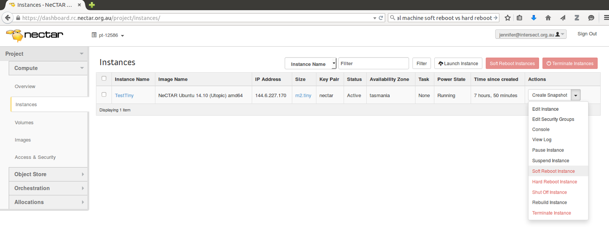

Module 7
Launching and Connecting
Sections of this module:
IntroductionCreate a ssh key
Launching an instance
Connect to the instance
Configuration and control
Connect to a remote desktop
Graphical Interfaces on the ssh terminal
Install a web server
Managing storage
Summary
Appendix
View all sections on one page (Printer friendly)
Configuration and control
Welcome to your new virtual machine!
First of all, we want to make sure our system is updated. On Debian and its derivatives, like Ubuntu, you can update your packages with the commands:
sudo apt-get update
sudo apt-get upgrade
The first command refreshes the package information, and the second upgrades your system.

There are several ways to upgrade your system. The command above (sudo apt-get upgrade) simply updates the existing packages. You can also update more intelligently. Here’s a description of the various upgrade commands (extracts from the apt-get manual):
-
apt-get upgrade: upgrade is used to install the newest versions of all packages currently installed on the system [..]. Packages currently installed with new versions available are retrieved and upgraded; under no circumstances are currently installed packages removed, or packages not already installed retrieved and installed. New versions of currently installed packages that cannot be upgraded without changing the install status of another package will be left at their current version.
-
apt-get dist-upgrade: dist-upgrade in addition to performing the function of upgrade, also intelligently handles changing dependencies with new versions of packages; apt-get has a “smart” conflict resolution system, and it will attempt to upgrade the most important packages at the expense of less important ones if necessary. So, dist-upgrade command may remove some packages.
-
apt-get full-upgrade: full-upgrade performs the function of upgrade but may also remove installed packages if that is required in order to resolve a package conflict.
You may also want to change the password for the user ubuntu:
passwd
Note: You will not be prompted for your ubuntu user password when you connect through ssh. This is because in the default configuration, the ssh key is regarded sufficient for authentication purposes. Therefore, each user on the virtual machine should have their own ssh key.
More importantly, you should change the password for root access (administrator rights), especially if you are planning to add more users to the virtual machine:
sudo passwd root
and type in the new password twice.

If you do not change the root password, and later add other users to the VM, any user will be able to log in as root and perform administrator tasks (using the command su -).
When you create new user accounts, and you do not want them to have root access, make sure you do not include them in the user group sudo. Any user which is member of this group can execute administration tasks.
Having problems connecting? The Appendix includes a section on troubleshooting.
Using a command line text file editor
Sometimes, we will have to edit files on the instance via the command line. Because this is a command line, we cannot use programs like Word or iNote to edit a file. Instead, we have to use a command line editor.
There is a large number of command line editors available. A simple and easy-to-use editor is nano. Vim is also popular but a bit more difficult to use for beginners.
If you want to edit a file, type
nano <path-to-your-filename>
The terminal changes into a simple editor. You can edit the file and then exit the editor with Ctrl+X. A prompt will come up asking if you want to save the file, type ‘Y’ to confirm this.
We will create a file to test this. Type
nano MyFile.txt
and hit enter to confirm the command. Write a little story or anything you are just thinking of into the file. Then, hit Ctrl+X to exit, and confirm with “Y” that you want to save the file. Now, type
ls
and hit enter to confirm the command. You will see the list of files that are there. The list should contain a file “MyFile.txt”. You may print the contents of the text file onto the terminal by typing:
cat MyFile.txt
and you should be able to read your message in the terminal. Exit again with Ctrl+X.
Restarting your instance
Sometimes, you may want to restart your instance. For example, to make sure everything works correctly after you installed some packages. You can do this in the Dashboard.
Step 1. Reboot on the Dashboard.
Go to the Dashboard and click on Instances on the navigation panel on the left to see your instance. On the right side of your instance, you can open up a drop-down box.

click on “Soft Reboot Instance” (a soft reboot is what we know as a reboot. A hard reboot forces the reboot in case the soft reboot does not react).
Step 2. Re-connect ssh client.
Your ssh session, or the PuTTY session if you are on Windows, will have disconnected now, so you have to re-connect. On Windows PuTTY, you should have your login session still saved so you just need to load these settings up. On Mac and Linux, simply re-run the ssh command (Tip: you can browse the command line history with the “up/down” arrow keys in your ssh terminal. Your ssh command should be in there so you don’t have to type it again).
Tip for Unix/Mac
You can make your life a bit easier by saving your configuration for the ssh connection. This will avoid always having to type your IP address. There is two options to do this: a) specifying all details or b) creating an alias for your IP address. Then, instead of typing in the full ssh command every time, you will just do the following:
Option 1:
ssh MyNectarInstance
Option 2:
ssh -i Nectar_Key ubuntu@MyNectarInstance
Option 1
You need to edit a file on your local computer (not on the instance!).
Open a new terminal on your computer. Then, open up the file ~/.ssh/config using your favourite editor, for example:
nano ~/.ssh/config
and add the following contents:
Host MyNectarInstance HostName NNN.NNN.NNN.NNN User ubuntu IdentityFile ~/.ssh/Nectar_Key
Again, replacing the N’s with your IP address.
You can choose any other alias name instead of MyNectarInstance. Save the file and close it.
From now on, you can connect with the command:
ssh MyNectarInstance
or, if you chose another name, replace MyNectarInstance with it.
Option 2
You may also just alias your IP address in the system’s host file.
On Unix systems and on Mac 10.2 and newer, the file to edit is usually the file /etc/hosts. On Mac 9 and earlier you can find it in the Preferences or Systems folder.
Open this file in your favourite editor, for example:
sudo nano /etc/hosts
and add the following line:
NNN.NNN.NNN.NNN MyNectarInstance
replacing the N’s by the IP address of your instance. You may also choose another name instead of MyNectarInstance. Next time you ssh into the instance, you can connect with:
ssh -i <path-to-your-keyfile> ubuntu@MyNectarInstance
Note this is the same command we used earlier, but you can type MyNectarInstance instead of your IP address. You will be asked to accept the authenticity of the host again. Answer with “yes”.

 This work is licensed under a
This work is licensed under a